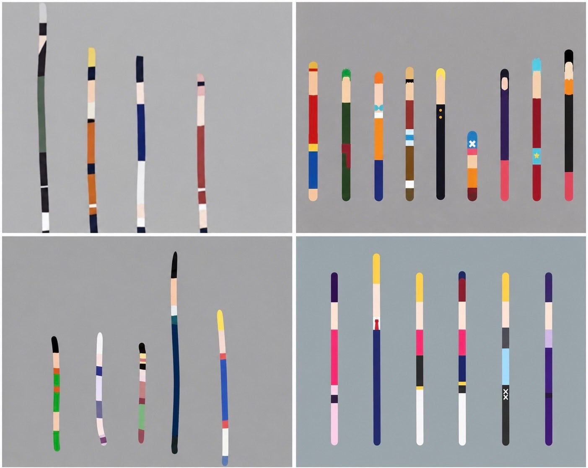

위에는 대충 알겠는데 아래는 뭘까

위에는 대충 알겠는데 아래는 뭘까
카카시 나루토 사스케 사쿠라/루피 조로 나미 우솝 상디 쵸파 로빈 프랑키 브룩/곤 키르아 나니카 레오리오 크라피카
왼쪽은 헌터x헌터고 오른쪽은 최애의 아인가
나루토 원피스 헌헌?
아래는 잘 모르겠네
나루토 원피스
헌터헌터 최애의아이
정답입니다
나도 맞췄다 헷
최애의아이가 저기에 낄 짬인가
ㄹㅇ 저기엔 블리치가 끼는 게 맞지 않나
나루토 원피스
헌헌 이건 몰라
밑에서 오른쪽은 최애의 아이
생각보다 난이도가 낮다 오른쪽은 선만 있는 것도 아니라서
최애의 아이는 왼쪽에서부터 호시노 아이 / 아쿠아 / 루비 / 아리마 카나 / 멤쵸 / 쿠로카와 아카네
카게쿠루이임
오른쪽아래 2번째 트럼프인거 말고는 암것도 모르겠다

해리스 카말라, 도널드 트럼프, 멜라니아 트럼프, 미셸 오바마, 제프리 엡스타인, 알리 하메네이
ㅅㅂㅋㅋㅋㅋㅋ미쳤냐 ㅋㅋㅋ
지구 최강 분탕은 한줄로 그려도 티가나는구나 ㅋㅋ
아 최애의 아이;;
헌터헌터 가운데 누구야?
키르아 여동생
최애의 아이를 이렇게 안다고…?
원나헌헌 까진 알겠다
위에 두개는 확실히 알겠고 헌터헌터는 시바 하도 연중을 해서 가물가물하네... 최애의아이는 재밋게 보긴했는데 만화책이라 색감 전혀 모름
======세대가 보이는 게시물입니다======
트럼프 ㅋㅋㅋ
나루토 / 원피스
헌x헌 / 감도 안온다.
단체로 기괴한 아미가라 단층에라도 들어갔냐?
위에만 알겠어
최애의아이 빼곤 알겠네
오른쪽 아래 두번째 트럼프 아님?
아래는 전혀 모르겠다
확실히 원피스 나루토 인지도가 엄청나네
우하단에서는 트럼프가 보이는데
최애는 나가라
눈깔귀신 애니가 어딜 끼려드는게냐 무엄하다
나루토 원피스 헌헌